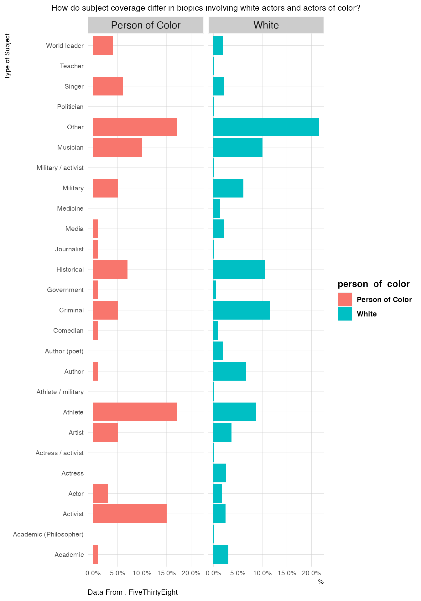
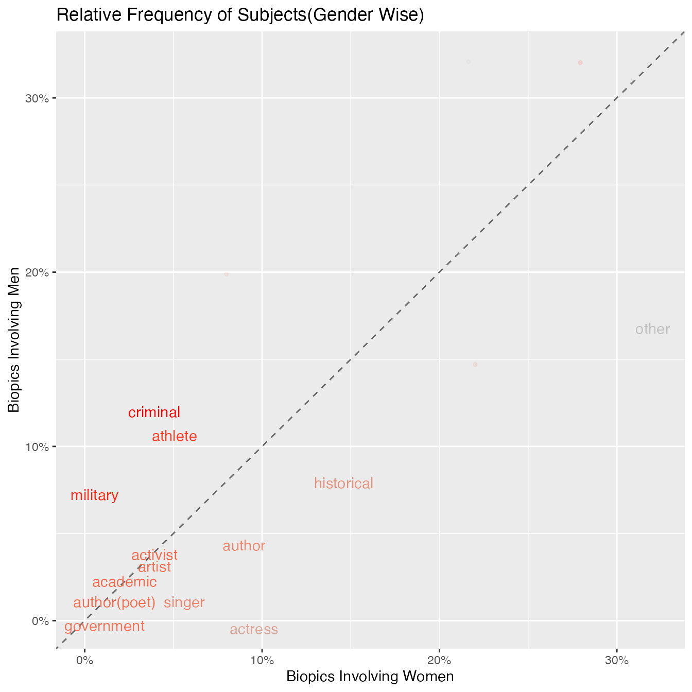

biopics.RmdFor this project, we will be using the tidyverse library for data analysis. This is an R package that consists of tools such as ggplot2(data visualization),tidyr(data modification), dplyr (data management). The data set is obtained by calling the fivethirtyeight package using the command library(fivethirtyeight).
After calling the necessary libraries, we look at the structure of the data. The command glimpse() allows us to get a brief summary of the data we are dealing with. This saves from displaying the entire dataset. A custom theme is set which will be used for all the graphs in this project.
library(fivethirtyeight)
library(ggplot2)
library(dplyr)
library(tidyr)
library(scales)
library(stringr)
library(highcharter)
glimpse(biopics)## Rows: 761
## Columns: 14
## $ title <chr> "10 Rillington Place", "12 Years a Slave", "127 Hou…
## $ site <chr> "tt0066730", "tt2024544", "tt1542344", "tt2833074",…
## $ country <chr> "UK", "US/UK", "US/UK", "Canada", "US", "US", "UK",…
## $ year_release <int> 1971, 2013, 2010, 2014, 1998, 2008, 2002, 2013, 199…
## $ box_office <dbl> NA, 5.67e+07, 1.83e+07, NA, 5.37e+05, 8.12e+07, 1.1…
## $ director <chr> "Richard Fleischer", "Steve McQueen", "Danny Boyle"…
## $ number_of_subjects <int> 1, 1, 1, 1, 1, 1, 1, 1, 1, 2, 2, 1, 3, 3, 3, 1, 1, …
## $ subject <chr> "John Christie", "Solomon Northup", "Aron Ralston",…
## $ type_of_subject <chr> "Criminal", "Other", "Athlete", "Other", "Other", "…
## $ race_known <chr> "Unknown", "Known", "Unknown", "Known", "Unknown", …
## $ subject_race <chr> NA, "African American", NA, "White", NA, "Asian Ame…
## $ person_of_color <lgl> FALSE, TRUE, FALSE, FALSE, FALSE, TRUE, FALSE, TRUE…
## $ subject_sex <chr> "Male", "Male", "Male", "Male", "Male", "Male", "Ma…
## $ lead_actor_actress <chr> "Richard Attenborough", "Chiwetel Ejiofor", "James …The data consists of 14 variables(columns) and 764 observations(rows). We will dive deeper into the data by asking ourselves a few questions about
biopics %>%
group_by(year_release) %>%
summarise(n=n()) %>%
ggplot(aes(x=year_release,y=n)) +
geom_bar(stat = "identity") +
plot_theme() +
labs(x="Year",y="Number of Releases",title="Number of Releases by Year",
subtitle="", caption="Source:FiveThirtyEight")The number of biopics have been increasing.
poc <- biopics %>%
mutate(time_period=cut(year_release,breaks=11,label=c("1910-1920","1920-1930","1930-1940","1940-1950","1950-1960","1960-1970","1970-1980","1980-1990","1990-2000","2000-2010","2010-2014"))) %>% group_by(time_period,person_of_color) %>%
summarise(n=n()) %>%
mutate(person_of_color=ifelse(person_of_color==0,"White","Person of Color")) %>%
mutate(n=n/sum(n))## `summarise()` has grouped output by 'time_period'. You can override using the `.groups` argument.
ggplot(poc, aes(x=time_period, y=n, fill=person_of_color)) +
geom_bar(stat="identity") +
plot_theme() +
theme(axis.text.x = element_text(vjust=1,angle=90)) +
scale_y_continuous(labels = percent) +
labs(x="Decade",y="Percentage Composition",title="How do the % of movies involving actors of color change by decade?",caption="Data From: FiveThirtyEight")The percentage of movies that had actors of color was the highest in the period 2010-2014. Biopics that had actors of color were non existent during the period 1910-1930.
White Actors
biopics %>%
mutate(person_of_color=ifelse(person_of_color==0,"White","Person of Color")) %>%
group_by(person_of_color,type_of_subject) %>%
summarise(n=n()) %>%
mutate(n=(n/sum(n))*100) %>%
filter(person_of_color !="Person of Color") %>%
mutate(n=round(n,2)) %>%
hchart("treemap", hcaes(x = type_of_subject, value = n, color = n)) %>%
hc_title(text="Type of Subjects of Movies involving White Actors(%)")Actors of Color
biopics %>%
mutate(person_of_color=ifelse(person_of_color==0,"White","Person of Color")) %>%
group_by(person_of_color,type_of_subject) %>%
summarise(n=n()) %>%
mutate(n=(n/sum(n))*100) %>%
filter(person_of_color =="Person of Color") %>%
mutate(n=round(n,2)) %>%
hchart("treemap", hcaes(x = type_of_subject, value = n, color = n)) %>%
hc_title(text="Type of Subjects of Movies involving Actors of Color(%)")A side by side comparison
biopics %>%
mutate(person_of_color = ifelse(person_of_color==0,"White","Person of Color")) %>%
group_by(person_of_color,type_of_subject) %>%
summarise(n=n()) %>%
mutate(n=n/sum(n)) %>%
ggplot(aes(x=type_of_subject,y=n,fill=person_of_color))+
geom_bar(stat="identity")+
scale_y_continuous(labels=percent)+
plot_theme()+
facet_wrap(~person_of_color)+
coord_flip()+
labs(title="How do subject coverage differ in biopics involving white actors and actors of color?",caption="Data From : FiveThirtyEight",x="Type of Subject",y="%")## `summarise()` has grouped output by 'person_of_color'. You can override using the `.groups` argument.
biopics %>%
mutate(person_of_color=ifelse(person_of_color==0,"White Actor","Actor of Color")) %>%
group_by(year_release,person_of_color) %>%
summarise(n=n()) %>%
ggplot(aes(x=year_release,y=n,colour=person_of_color))+
geom_line()+
plot_theme()+
geom_vline(xintercept=1964,linetype=2)+
labs(x="Year",y="Number",title="Number of Biopics by White Actors and Actors of Color",
subtitle="",
caption="Data from FiveThirtyEight")+
geom_text(aes(1964,0),label="Civil Rights' Act",show.legend = F,hjust=-1,angle=90,vjust=1,inherit.aes = F,size=3)+
geom_vline(xintercept=1974,linetype=2)+
geom_text(aes(1974,0),label="First Successful African American themed Sitcom",show.legend = F,
hjust=0,vjust=1,inherit.aes = F,angle=90,size=3,colour="black")## `summarise()` has grouped output by 'year_release'. You can override using the `.groups` argument.The vertical dashed line above indicates the year 1964, when the Civil Rights’ Act was passed. The number of biopics depicting colored persons went up in the 1970’s. The first successful African American themed sitcom was released in the year 1974 (“Good Times”).
biopics %>%
group_by(year_release,subject_sex) %>%
summarise(n=n()) %>%
rename(gender=subject_sex) %>%
ggplot(aes(x=year_release,y=n,colour=gender))+
geom_line()+
plot_theme()+
labs(x="Year",y="Number",title="Number of Biopics By Gender",
subtitle="",caption="Data from FiveThirtyEight")+
scale_x_continuous(breaks = seq(1920,2014,5))+
theme(plot.title=element_text(size=18),axis.text.x = element_text(angle=90, vjust=1))## `summarise()` has grouped output by 'year_release'. You can override using the `.groups` argument.Before we start plotting the data, we have to replace empty values with a zero. For that purpose we modify the data using the gather and dcast functions . These functions help us reshape the data and assign values.
year_wise_female <- biopics %>%
group_by(subject_sex,year_release) %>%
summarise(n=n()) %>%
filter(subject_sex=="Female") %>%
mutate(n_new=lag(n,1)) %>%
mutate(change=n-n_new)## `summarise()` has grouped output by 'subject_sex'. You can override using the `.groups` argument.
year_wise_male <- biopics %>%
group_by(subject_sex,year_release) %>%
summarise(n=n()) %>%
filter(subject_sex=="Male") %>%
mutate(n_new=lag(n,1)) %>%
mutate(change=n-n_new)## `summarise()` has grouped output by 'subject_sex'. You can override using the `.groups` argument.
year_wise <- bind_rows(year_wise_male,year_wise_female)
year_wise %>%
ggplot(aes(x=as.numeric(year_release),y=change)) +
geom_line() +
plot_theme()+
labs(x="Year",y="Number",title="Change in Number of Biopic Movies From Previous Year",
subtitle="", caption="Data from FiveThirtyEight")+
facet_wrap(~subject_sex,scales = "fixed")+
scale_x_continuous(breaks = seq(1920,2014,5)) +
theme(plot.title=element_text(size=18),axis.text.x = element_text(angle=90, vjust=1))The change in the number of biopics that had male subjects shot up in 2014.
biopics$type_of_subject <- gsub(" ","",biopics$type_of_subject)
biopics <- biopics %>%
mutate(type_of_subject = strsplit(as.character(type_of_subject), "/")) %>%
unnest(type_of_subject)
biopics$type_of_subject <- tolower(biopics$type_of_subject)
women_percent <-biopics %>%
filter(subject_sex=="Female") %>%
group_by(type_of_subject) %>%
summarise(n=n()) %>%
mutate(percent_women=n/sum(n))
men_percent <- biopics %>%
filter(subject_sex=="Male") %>%
group_by(type_of_subject) %>%
summarise(n=n()) %>%
mutate(percent_man=n/sum(n))
percent_overall <- full_join(women_percent,men_percent,by="type_of_subject") %>%
select(-c(n.x,n.y)) %>%
mutate(percent_women = ifelse(is.na(percent_women),0,percent_women),percent_man=ifelse(is.na(percent_man),0,percent_man))
ggplot(percent_overall, aes(x = percent_women, y = percent_man, color = (percent_women - percent_man))) +
geom_abline(color = "gray40", lty = 2) +
geom_jitter(alpha = 0.1, size = 1, width = 0.3, height = 0.3) +
geom_text(aes(label = type_of_subject), check_overlap = TRUE, vjust = 1.5) +
scale_x_continuous(labels = percent_format(),limits = c(0,0.322)) +
scale_y_continuous(labels = percent_format(),limits=c(0,0.322)) +
scale_color_gradient( low = "red", high = "gray75") +
theme(legend.position="none") +
labs(y = "Biopics Involving Men", x ="Biopics Involving Women",text=element_text(size=10),
plot.title=element_text(hjust=0.5))+
ggtitle("Relative Frequency of Subjects(Gender Wise)")## Warning: Removed 19 rows containing missing values (geom_point).
Topics that are close to the line indicate topics that have similar frequencies in both the sets of data. These topics include government,academic and activist. Topics that are far from this line are topics that are found frequently in one set but not the other.For example,a larger percentage of biopics that involved women,portrayed authors. By looking at the other side, topics like military had a higher percentage of coverage in biopics involving men than women.More the red color of the text, the more frequently the topic appears in biopics related to men.
biopics %>% mutate(cuts=cut(year_release,breaks=5,label=c("1910-1930","1930-1950","1950-1970","1970-1990","1990-2010")))%>%
mutate(subject_race=ifelse(grepl("\\bHispanic\\b",subject_race),"Hispanic",subject_race)) %>%
group_by(cuts,subject_sex,subject_race)%>% filter(subject_race!="")%>%
summarise(n=n()) %>%
mutate(n=n/sum(n)) %>%
ggplot(aes(x=cuts, y=n*100, fill=subject_race)) +
geom_bar(stat="identity", position="dodge",width = 0.7)+
plot_theme()+
ylab("%")+
ggtitle("Gender and Race")+
theme(plot.title = element_text(hjust = 0.5))+
xlab("Year")+
scale_fill_manual(values = c("#24576D", "#A113E2","#000000", "#D91460",
"#28AADC", "#40cc49","#F2583F",
"#96503F","#ffc100","#918d58","#e98000","#d2f4d2",
"#cdc8b1","#a87582"))+
facet_grid(subject_sex~.)+
theme(plot.title=element_text(size=18),axis.text.x = element_text(angle=90, vjust=1))+
labs(caption="Data From FiveThirtyEight")## `summarise()` has grouped output by 'cuts', 'subject_sex'. You can override using the `.groups` argument.Most of the biopics depict White Americans followed by African Americans.
The box office information suggests how successful the movie was. In this section, we are not taking into account the factor of inflation.
options(scipen=999)
biopics %>%
filter(box_office!="-") %>%
mutate(
box_office=gsub("$","",box_office,fixed=T),
denom=str_sub(box_office,nchar(box_office),nchar(box_office)),
box_office=gsub("M","",box_office),
box_office=gsub("K","",box_office),
box_office=as.numeric(box_office),
box_office=ifelse(denom=="M",box_office*1000000,box_office),
box_office=ifelse(denom=="K",box_office*1000,box_office),
box_office= box_office/1000000
) %>%
ggplot(aes(x=as.factor(year_release), y=box_office)) +
geom_boxplot() +
stat_summary(fun.y="mean", geom="point", shape=23, size=2, fill="white")+
plot_theme()+
labs(title="Distributions of Earning Per Year",x="Year",y="In Millions",
subtitle="Inflation not taken into account(Diamond Point Represents Mean)",caption="Data From FiveThirtyEight")+
facet_wrap(~subject_sex,ncol=1)+
theme(axis.text.x = element_text(angle=90,vjust=1))## Warning: `fun.y` is deprecated. Use `fun` instead.A large number of movies earned below $100M.As we progress through the 80’s, these numbers go higher , especially in the case of biopics based on men. The highest earning movie based on a female protaganist was released in 1964.This was the “Sound of Music” which earned approximately $163M.
options(scipen=999)
biopics %>%
filter(box_office!="-") %>%
mutate(
box_office=gsub("$","",box_office,fixed=T),
denom=str_sub(box_office,nchar(box_office),nchar(box_office)),
box_office=gsub("M","",box_office),
box_office=gsub("K","",box_office),
box_office=as.numeric(box_office),
box_office=ifelse(denom=="M",box_office*1000000,box_office),
box_office=ifelse(denom=="K",box_office*1000,box_office),
box_office=box_office/1000000) %>%
ggplot(aes(x=subject_sex, y=box_office,fill=subject_sex)) +
geom_violin(color = "grey50")+
xlab("Box Office") +
ylab("Count") +
stat_summary(fun.y="mean", geom="point", size=2, colour="white") +
plot_theme() +
theme(legend.position="none")+
labs(x="Gender",y="In Millions",title="Distributions of Box Office Earnings",
subtitle="Inflation Not Taken into Account",
caption="Source: FiveThirtyEight")## Warning: `fun.y` is deprecated. Use `fun` instead.The mean earning is a little higher for biopics with male subjects. The mean is higher probably due to the outliers present.
biopics %>%
filter(box_office!="-") %>%
mutate(
box_office=gsub("$","",box_office,fixed=T),
denom=str_sub(box_office,nchar(box_office),nchar(box_office)),
box_office=gsub("M","",box_office),
box_office=gsub("K","",box_office),
box_office=as.numeric(box_office),
box_office=ifelse(denom=="M",box_office*100000,box_office),
box_office=ifelse(denom=="K",box_office*1000,box_office),
box_office=box_office/1000000
) %>%
ggplot(aes(x=as.factor(person_of_color), y=box_office,fill=as.factor(person_of_color))) +
geom_violin(color = "grey50")+
xlab("Person of Color") +
ylab("Count") +
stat_summary(fun.y="mean", geom="point", size=2, colour="white") +
plot_theme() +
theme(legend.position="none")+
labs(x="Person of Color",y="In Millions",title="Distributions of Box Office Earnings",
subtitle="Inflation Not Taken into Account",
caption="Source: FiveThirtyEight")## Warning: `fun.y` is deprecated. Use `fun` instead.More number of movies with protaganists of color earned higher in the box office. This is probably why the average box office earnings are higher.
This shows that there needs to be more involvement by directors and actors in producing movies that depict important personalities that belong to other races.